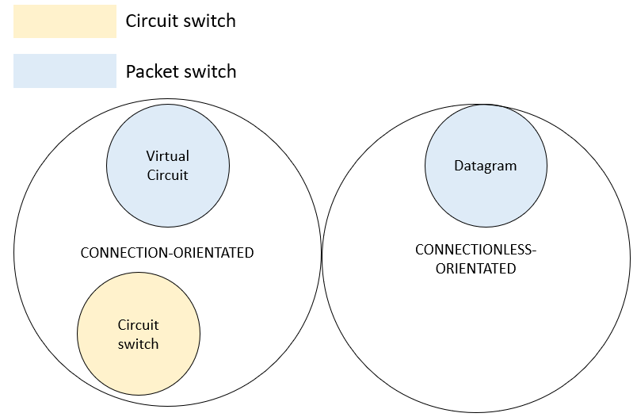

Circuit-Switch/Packet-Switch
The purpose of a computer network is to provide services to users. Those services may need...
- Guaranteed bandwidth --> Circuit-Switch
- Expected bandwidth --> Packet-switch
Circuit-swtich
- Dedicated point-to-point link between 2 devices.
- Used in telephone systems.
- You have to setup a path before you can start talking.
Packet-swtich
- Allows many devices to use the same link.
- Before the message is sent, the message is broken down into chunks (aka. packets).
- Used in the Internet.
- There are 2 services in Packet Switching:
- Virtual circuit - setup a circuit. Sender and receiver communicate directly (connection orientated).
- Datagram - don't setup a circuit. Messages are sent immediately (connectionless).

Connection-Orientated vs Connectionless Services
Connection-Orientated:
Connectionless:
- Each packet is routed independently of its predecessors. Successive packets may follow different routes.
- Packets may arrive in a different order from that in which they were sent
- Each datagram must contain the full destination address.
| Service | Example |
| Unreliable datagram | Electronic junk email |
| Reliable datagram | Email |
| Acknowledged datagram | Text messaging |
| Request-reply | Database query |
You may be wondering why electronic junk email is an unreliable datagram...
- Because the junk email was probably sent to thousands of users, and naturally a few might get lost along the way which is no big deal... apparently?